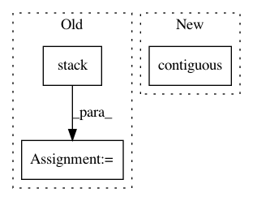

4017d2beea471b593ae169f17bc08d4c236c0b46,torch_geometric/read/obj.py,,read_obj,#Any#,20
Before Change
return None
pos = torch.stack(vertices, dim=0)
face = torch.stack(faces, dim=-1)
data = Data(pos=pos)
data.face = face
return data
After Change
return None
pos = torch.tensor(vertices, dtype=torch.float)
face = torch.tensor(faces, dtype=torch.long).t().contiguous()
data = Data(pos=pos, face=face)
return data
In pattern: SUPERPATTERN
Frequency: 3
Non-data size: 3
Instances
Project Name: rusty1s/pytorch_geometric
Commit Name: 4017d2beea471b593ae169f17bc08d4c236c0b46
Time: 2019-08-01
Author: matthias.fey@tu-dortmund.de
File Name: torch_geometric/read/obj.py
Class Name:
Method Name: read_obj
Project Name: rusty1s/pytorch_geometric
Commit Name: 5510a7709e957615fb55397698f8e1c79cd5481b
Time: 2020-07-01
Author: matthias.fey@tu-dortmund.de
File Name: torch_geometric/io/ply.py
Class Name:
Method Name: read_ply
Project Name: OpenNMT/OpenNMT-py
Commit Name: 68fbfd1876c367323acf830736bae1af499cc0fe
Time: 2018-03-07
Author: dengyuntian@gmail.com
File Name: onmt/modules/Transformer.py
Class Name: TransformerDecoder
Method Name: forward